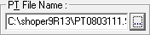
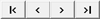

To select the items, for which the labels are to be printed, from a purchase transaction file.

Enter a file name or click  and select the file.
and select the file.
The first item's details in the specified
PT file is displayed in the Selected
Item grid. Use


Labels to Print:
Specified Quantity: This option is not available as we cannot specify a quantity in this case.
Present Stock: This option is not available in HO.
Total Records: The total number of items in the PT file is displayed.
Current Stock: This option is not available in HO as present stock cannot be chosen.
Labels to Print: The purchase quantity, as specified in the PT file, for the item currently listed in the Selected Item grid is displayed.
Note: On clicking OK, you will get the provision to select the printer on which the labels need to be printed, if you are using the new script file (.blf).